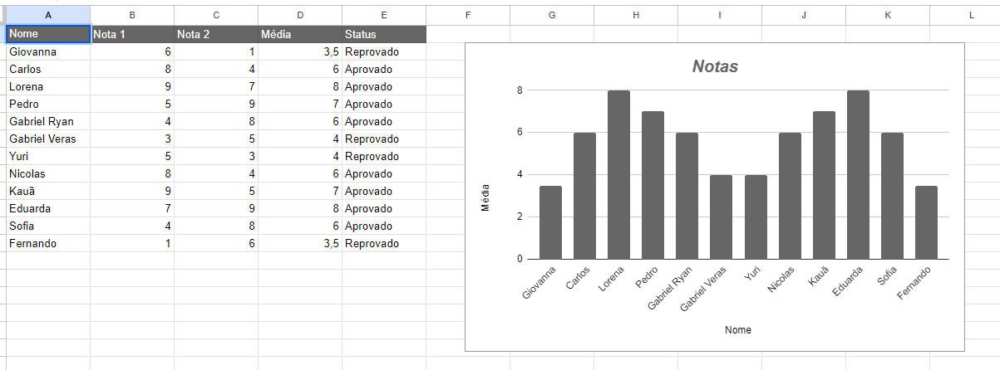

Terminar mais uma aula de robótica foi uma experiência incrível.
Hoje, decidi dar um passo adiante e coloquei meu portfólio online utilizando o Firebase.
Foi uma mistura de empolgação e nervosismo enquanto configurava tudo, mas ver meu trabalho finalmente
disponível para o mundo ver é uma sensação indescritível.
Agora, posso compartilhar meu progresso e conquistas de forma mais acessível e profissional.
Estou ansioso para receber feedback e continuar aprimorando minhas habilidades tanto em robótica quanto em desenvolvimento web.
Que ótimo progresso! Dominar o básico do Excel pode abrir muitas portas para você. Hoje, mergulhei no mundo das planilhas e aprendi a criar uma lista de aprovados e reprovados.
Foi gratificante ver como algumas fórmulas simples podem automatizar tarefas e
organizar dados de forma eficiente.
Este conhecimento certamente será útil em muitas áreas da minha vida, desde a escola até projetos futuros.
Mal posso esperar para explorar mais recursos e aprofundar meu entendimento do Excel.

Claro, aqui está um resumo sobre números e bases na linguagem da computação:
Sistemas Numéricos Básicos:
-Decimal: É o sistema numérico mais comum, usando 10 símbolos (0 a 9) para representar números.
-Binário: Usado internamente pelos computadores, representa números usando apenas 0s e 1s.
-Octal: Usa 8 símbolos (0 a 7) para representar números
Conversão entre Bases:
-Decimal para Binário: Divide-se o número decimal por 2 sucessivamente até chegar a 0, registrando os restos como dígitos binários.
-Binário para Decimal: Multiplica-se cada dígito binário pela potência de 2 correspondente à sua posição e soma-se os resultados.
-Outras conversões: Pode-se converter entre bases intermediárias, como octal e hexadecimal, usando como intermediário o sistema decimal.
Representação de Números Inteiros e Reais:
-Inteiros: Em binário, o bit mais à esquerda é o bit de sinal (0 para positivo, 1 para negativo), seguido pelos bits que representam o valor absoluto.
-Reais: Usam-se convenções para representar a parte fracionária, como o ponto flutuante, que divide o número em mantissa e expoente.
Operações Aritméticas:
-Binárias: Operações básicas como adição, subtração, multiplicação e divisão podem ser realizadas em diferentes bases.
-Conversões: Antes de realizar operações, os números devem ser convertidos para a mesma base.
Aplicações:
-Programação de Baixo Nível: Entender números e bases é crucial para trabalhar com representação e manipulação de dados em nível de hardware.
-Algoritmos de Criptografia: Muitos algoritmos de criptografia dependem da manipulação eficiente de números em bases diferentes para garantir a segurança dos dados.
Compreender números e bases é fundamental para qualquer pessoa que queira se envolver com programação ou
ciência da computação, pois esses conceitos formam a base para muitos outros aspectos da computação.